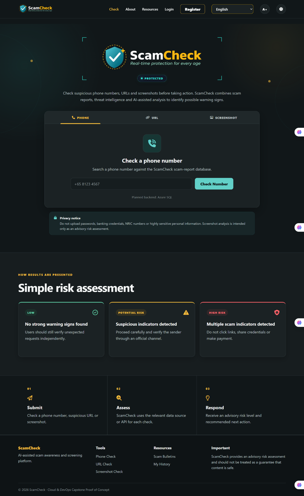
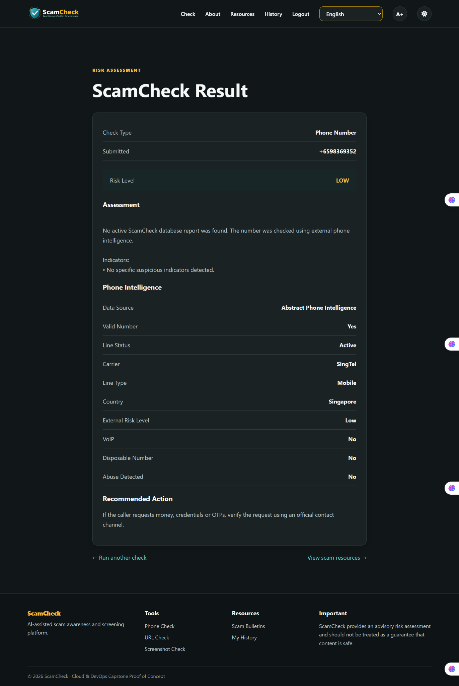
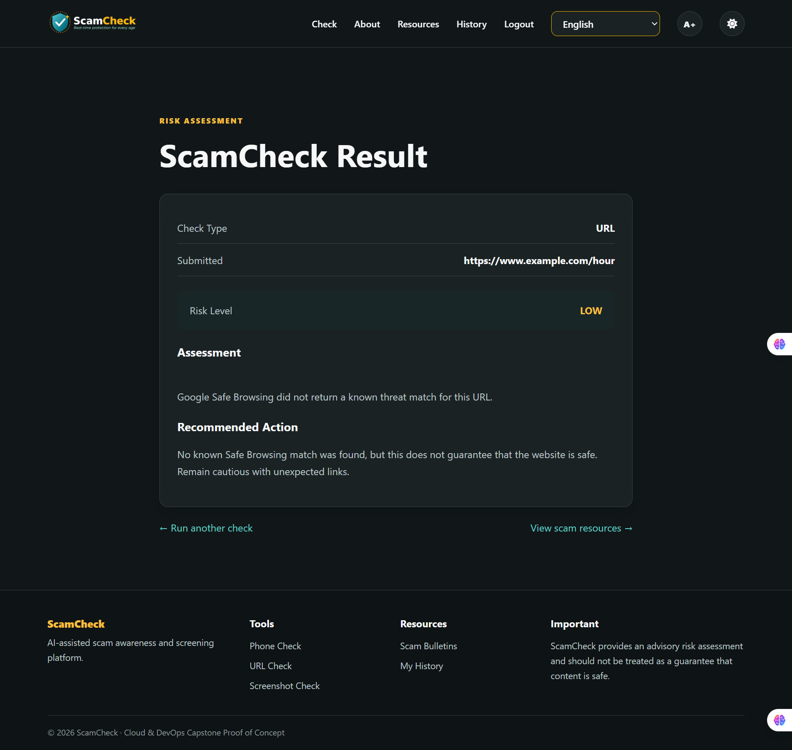
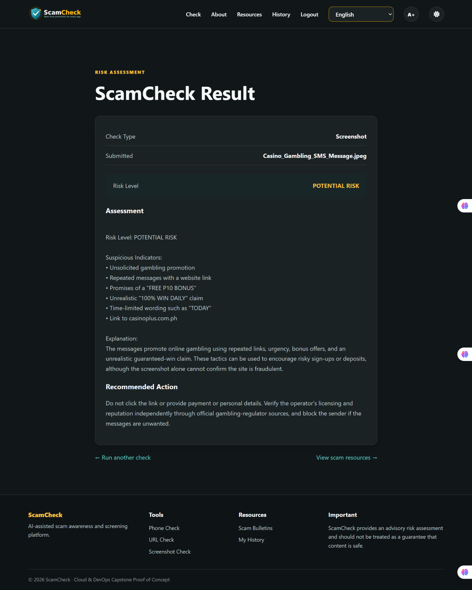
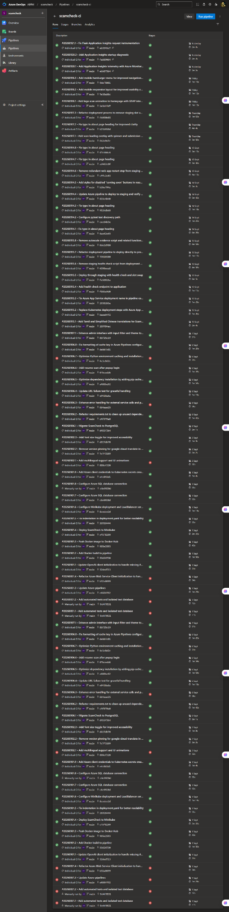
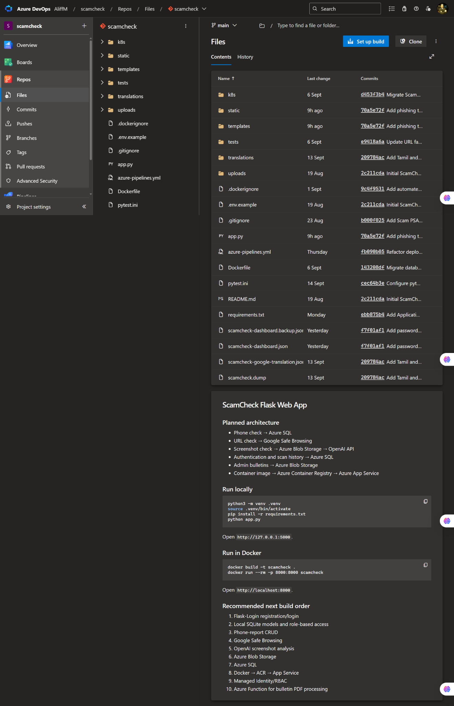
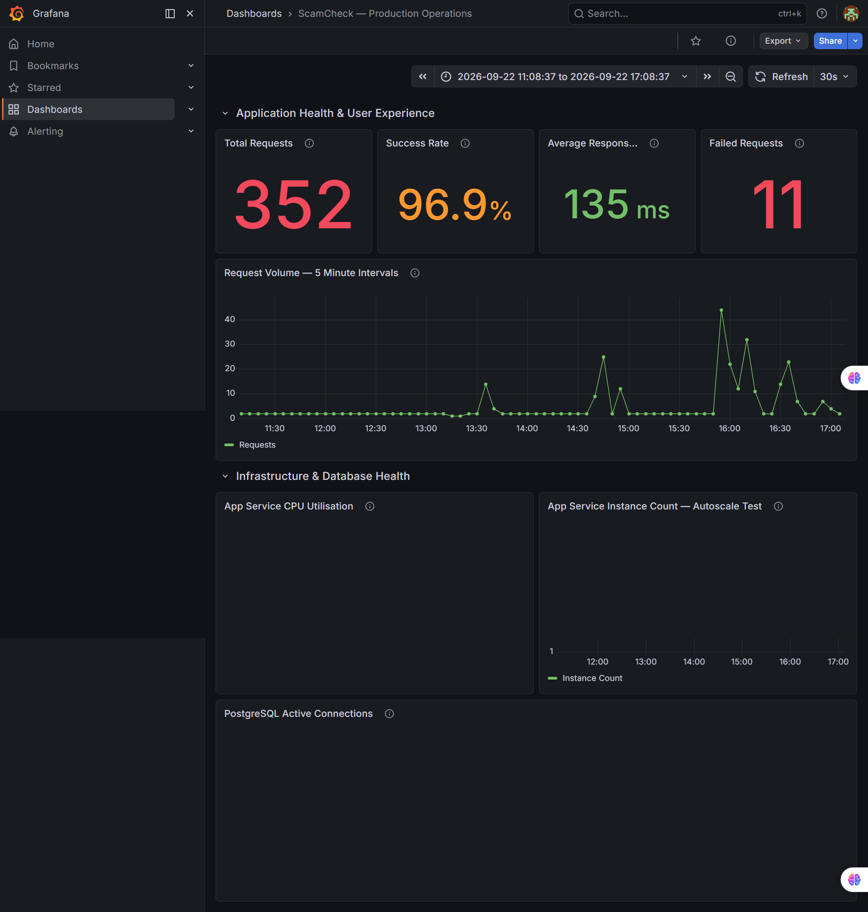
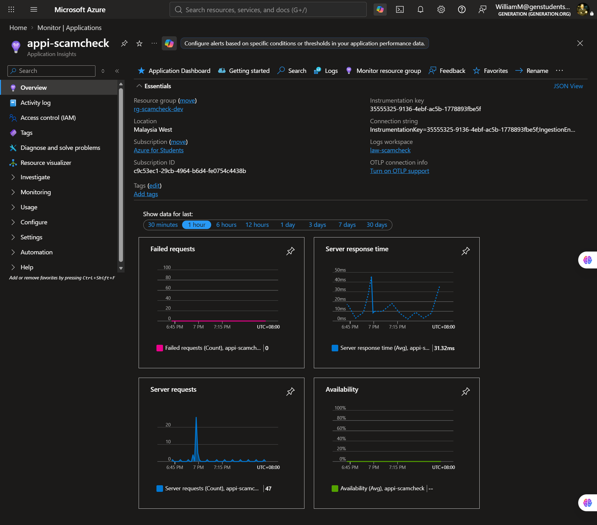

Application
Python · Flask · HTML/CSS · API integrations · automated tests · multilingual UI
CLOUD / SECURITY / DEVOPS
A cloud-hosted scam-awareness and risk-assessment platform that lets users check suspicious phone numbers, URLs and screenshots and receive an understandable advisory result.
01 — THE PROJECT
ScamCheck was developed as a Cloud Support & DevOps capstone proof of concept. The application brings together a web interface, backend application logic, external intelligence sources and cloud operations into one user-facing service.
The goal is not to declare a message or website "safe" with certainty. Instead, ScamCheck presents indicators and an advisory risk level so users can pause, verify and make a more informed decision.
02 — ENGINEERING STACK
Python · Flask · HTML/CSS · API integrations · automated tests · multilingual UI
Microsoft Azure · App Service · Application Insights / Azure Monitor · Azure SQL · Azure Storage
Azure DevOps Repos · Azure Pipelines · Docker · CI/CD · Kubernetes assets · iterative delivery
Google Safe Browsing · phone intelligence · screenshot-based scam indicators · privacy-aware user guidance
Grafana dashboarding · request volume · success/failure monitoring · response-time visibility · Azure application telemetry
Ongoing maintenance, monitoring and cost-management considerations — health checks, logging, alerting, resource sizing and operational awareness.
03 — USER EXPERIENCE
Enter a phone number, suspicious URL or screenshot.
ScamCheck evaluates the relevant intelligence source or analysis path.
Receive an advisory risk level, indicators and a recommended next action.
04 — PROJECT EVIDENCE
A selection of screenshots captured from the live application and its Azure/DevOps operating environment. Click any image to enlarge it.








05 — OPERATIONS
The monitoring evidence demonstrates the operational side of the project: request volume, success/failure rates and response time were surfaced through Grafana and Azure monitoring so that application behaviour could be observed rather than guessed.
In one captured Grafana test window on 22 September 2026, the dashboard displayed 352 total requests, a 96.9% success rate, 135 ms average response time and 11 failed requests. These are a point-in-time testing/monitoring snapshot, not a long-term SLA or production guarantee.
06 — WHAT THIS DEMONSTRATES
ScamCheck is an advisory risk-assessment proof of concept. A low-risk result does not guarantee that a message, number or website is safe. Users should independently verify unexpected requests through trusted official channels.
07 — EXPLORE
The strongest evidence is the combination of a working application, delivery pipeline and operational monitoring.